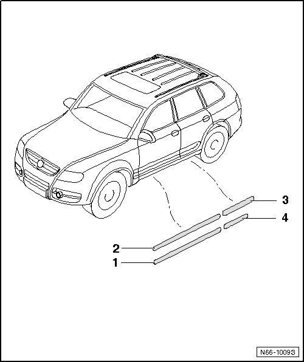

Door Moldings
Moldings and Trim
Door Moldings

Removing
- Warm the door molding with a hot air gun (V.A.G 1416) before removing.
- Remove the door molding - 1 -, - 2 -, - 3 - or - 4 - using the trim removal wedge (3409).
- Reach under the door molding and carefully pull it off the door.
Installing
- Remove any adhesive residue with Adhesive Remover (VAS 6349).
- Clean the outer panel from dirt, grease, wax and other contaminants just before installing the door molding first with adhesive remover (D 002 000 10) and then with plastic cleaner (D 195 850 A1).
• Always use a clean, lint-free towel.
• Only remove the protective film right before assembly.
- Peel off the protective film from the door molding just before installing it.
- Position the molding and press on it with the roller (3356).
The temperature must be minimum +68 °F (+20 °C).